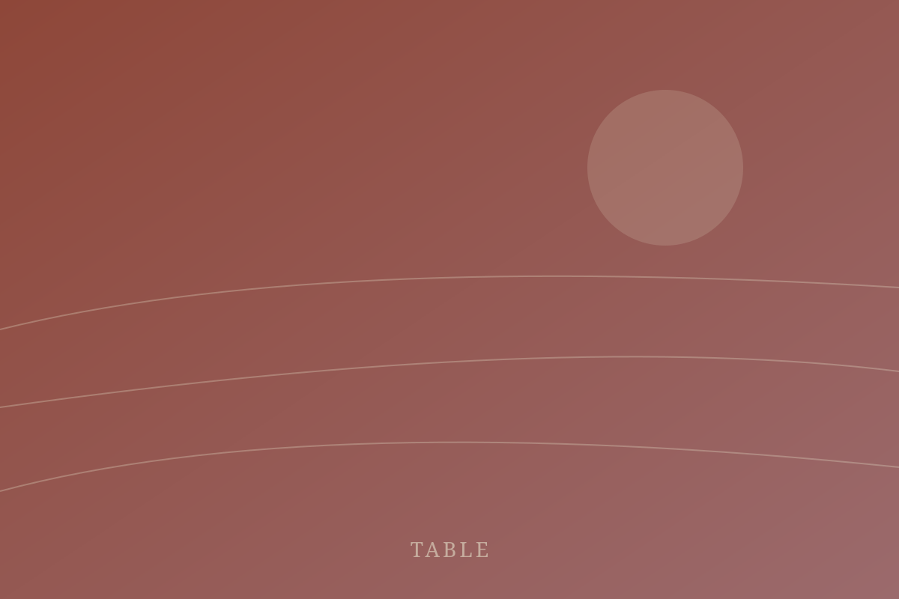

Dry Creek Valley
The Estate House
Six rooms above the barrel cellar, each opening onto the same long balcony.
Discover
Sonoma County · Est. 1962
Three estates, one ridge, and a long table that has not been cleared since the first harvest.
The place
Nothing here was designed to photograph well. The cellar was dug because the hill was cold, the terrace was poured because the kitchen ran out of room, and the orchard was planted because someone had seedlings.
What is left is a working property that happens to be beautiful, and rooms for the small number of people who want to stay inside one.
Read the journal
Where you sleep
Six rooms above the barrel cellar, each opening onto the same long balcony.
Discover
Four stone outbuildings, re-roofed and left otherwise alone.
Discover
Forty minutes west, for when the valley heat becomes a bad idea.
DiscoverWhile you are here

Thursday supper, one seating, whatever came out of the garden that morning.
Six wines, none of them finished, poured by whoever is working that day.
An hour at dawn through the old plantings, ending at the coffee pot.
A guided drive west with a packed lunch and no fixed turnaround.
Harvests
Rooms
Acres farmed
Seating per night
We kept the parts that worked and stopped apologising for the rest.Marguerite Ozanne, third generation
Dates, rooms, and whether the table has a seat left.